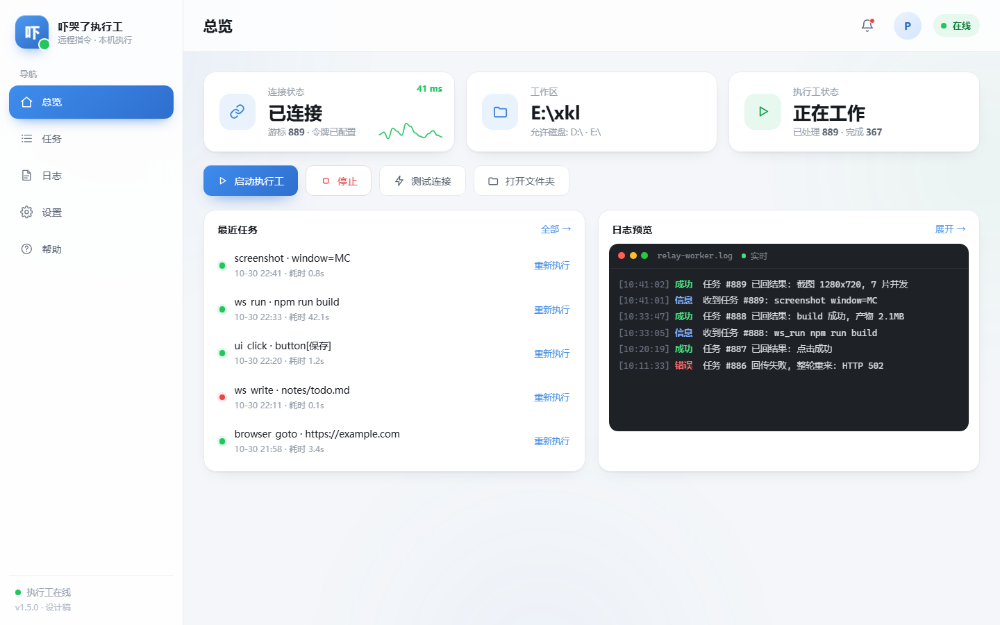

拖动旋转 · 点击节点
01
中转站
任务在这排队，等执行工来取。
拖动装置 · 点击节点
01 / 原理
怎么工作
三步，没了
- 01
取任务
定时问中转站有没有新任务。
- 02
在本机执行
读文件、点窗口、跑命令、控浏览器。
- 03
回结果
结果送回中转站，进度记在本地。
02 / 界面
界面
总览 · 任务 · 日志 · 设置

界面预览 · 点击切换
03 / 上手
跑起来
跑法启动看状态
图形界面 exe平时用
relay-worker.exe
窗口里实时看
无界面 exe开机自启、远程
relay-worker.exe --worker
翻日志文件
Python 脚本改代码调试
run_worker.bat
控制台
配置在 relay_config.json：base 与 token。日志、状态、最近一次截图都在 exe 同目录。脚本版需要 Python 3.8+。